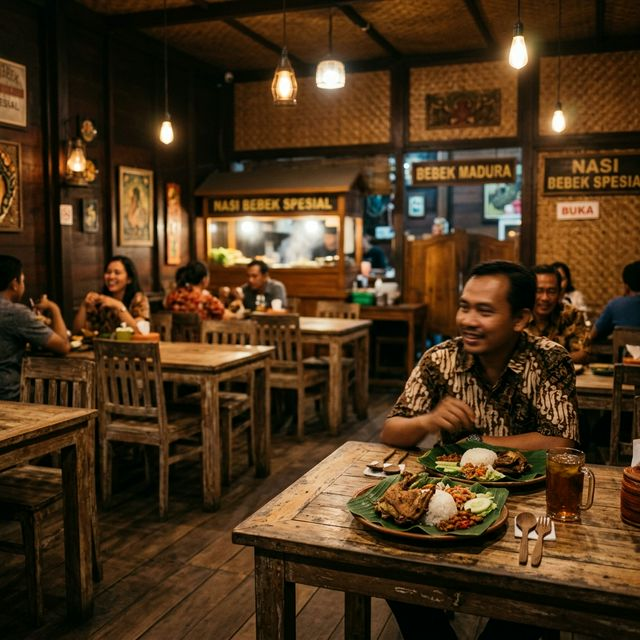
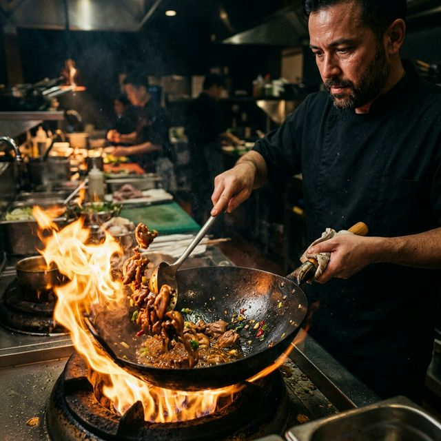
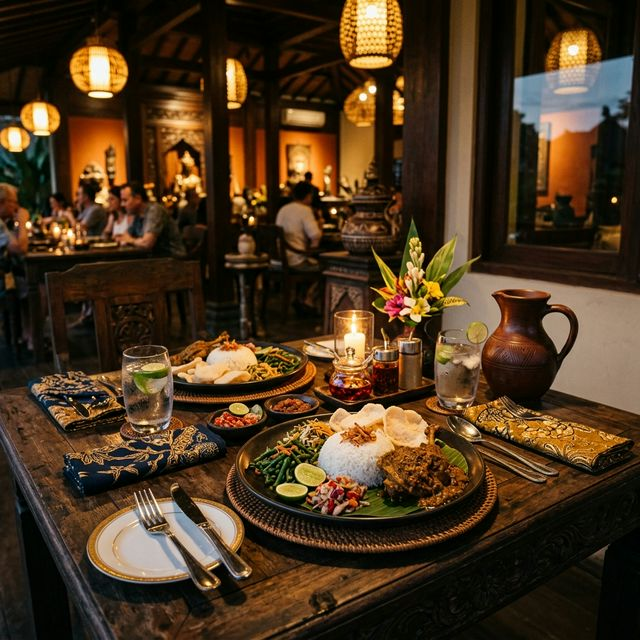

Nasi bebek legendaris dengan bumbu rempah hitam yang meresap dan sambal hijau yang menggugah selera. Disajikan hangat untuk kepuasan Anda.
Bermula dari warung kecil di Jakarta Utara, kami menyajikan Nasi Bebek dengan bumbu hitam yang kaya akan rempah pilihan. Resep rahasia keluarga kami menghasilkan daging bebek yang empuk, bumbu meresap hingga ke tulang, dan sambal hijau segar yang pedasnya pas untuk menemani hidangan Anda.
Kami bangga dapat mempertahankan cita rasa autentik ini dan selalu menyajikan kualitas terbaik kepada setiap kustomer tercinta kami selama lebih dari satu dekade.

Mengintip dapur kami dan suasana nyaman yang menanti kedatangan Anda.


Area tempat duduk kami selalu siap menyambut kedatangan Anda. Kami juga melayani pesan antar (delivery) maupun bawa pulang (takeaway).
Jl. Walang Baru Raya No. 19 RT 12/RW 008, Jakarta Utara, Indonesia
Setiap Hari: 07.00 - 22.00 WIB
+62 813-1120-4800